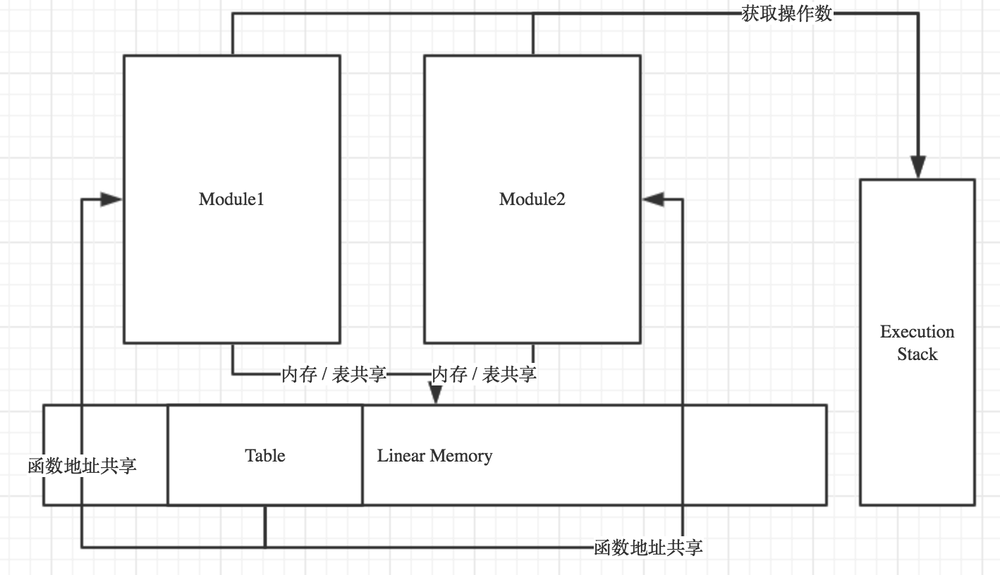

WebAssembly 尝试研究报告 - API 之初始化、内存和表的分配
本篇报告我们会花一点时间来详细了解下 WebAssembly JS API 的特性和使用方法。随着 WebAssembly MVP 版本标准的发布，与其对应的 Web API 也有了相应的改动和部分标准化特性。本次报告主要研究 WebAssembly 模块的初始化、内存分配、表分配等相关内容。
一、加载和初始化：
在浏览器提供的 JavaScript 对象中，WebAssembly 是一个包含所有与 WebAssembly 相关功能的命名空间对象（同 Math 对象一样），因此它并没有构造函数。WebAssembly 包含的一些方法和对象用来加载和初始化 WebAssembly 模块，相关的方法对象列出如下：
// 方法；
WebAssembly.compile(); // 用来从二进制代码编译出一个 WebAssembly.Module 对象；
WebAssembly.instantiate(); // 初始化一个 WebAssembly.Module 对象，同时传递需要的初始化参数；
WebAssembly.validate(); // 用来验证对应的二进制代码是否是来自一个完整的 Wasm 模块；
// 对象（构造函数）；
WebAssembly.Module(); // WebAssembly.Module 对象的构造函数；
WebAssembly.Instance(); // WebAssembly.Instance 对象的构造函数；
我们直接通过具体的例子来了解上述几个 API 的使用方法，该例子对应的 C/C++ 代码如下所示。代码很简单，一个预置函数 print_number 和一个调用了预置函数的加法函数 add，我们只需要在 JS 层初始化 Wasm 模块的时传递一个 print_number 函数实体即可。
int print_number (int i);
int add (int a, int b) {
print_number(a + b);
return a + b;
}
第一种初始化方式如下代码所示。我们均使用 WebAssembly 对象上的异步方法来进行 Wasm 模块的加载和初始化。整个初始化一共分为三个步骤：验证，编译，实例化。不论是通过 WebAssembly 对象的方法还是单独使用 WebAssembly 下各个对象的构造函数来初始化，其整体流程都是一样的。主要区别只是同步方式和异步方式两种不同的策略而已。
var importObject = {
env: {
print_number: function(number) {
console.log(number);
}
}
}
if (WebAssembly.validate(wasmCode)) {
WebAssembly.compile(wasmCode).then(module => {
WebAssembly.instantiate(module, importObject).then(instance => {
var add = instance.exports.add; // 导出的函数；
var memory = instance.exports.memory; // 获得内存对象；
console.log(memory instanceof WebAssembly.Memory);
console.log(add(1, 2));
});
});
}
第二种初始化使用 WebAssembly 提供的多种构造函数进行同步化的初始化过程，具体代码如下所示。
var importObject = {
env: {
print_number: function(number) {
console.log(number);
}
}
}
if (WebAssembly.validate(wasmCode)) {
var module = WebAssembly.Module(wasmCode);
var instance = WebAssembly.Instance(module, importObject);
var add = instance.exports.add;
var memory = instance.exports.memory;
console.log(memory instanceof WebAssembly.Memory);
console.log(add(1, 2));
}
第三种初始化方式同第一种十分相似，不同的是我们在这里没有首先使用 WebAssembly.compile 来编译 Wasm 的二进制代码，而是直接使用 WebAssembly.instantiate 对 Wasm 的二进制代码进行了实例化，这便是 WebAssembly.instantiate 的第二种使用场景。在第一种方法中，我们在初始化的过程中会产生一个中间对象即 WebAssembly.Module 对象，在这个对象中保存了已经编译好的无状态 WebAssembly 代码，这些代码可以通过 Web Workers 高效的传递给子 Worker 进行使用，或者将其存储在本地的 IndexedDB 当中（最新标准已无法存储），当有需要时可以从本地 DB 中取出多次的进行再实例化（Worker 传递和本地数据存储的相关内容我们会在下一篇报告中讲述）。因此相对来说，第三种初始化方法更适合用于不需要本地存储情况下的快速 WebAssembly 实例化。具体代码如下所示。
var importObject = {
env: {
print_number: function(number) {
console.log(number);
}
}
}
if (WebAssembly.validate(wasmCode)) {
// 第一个参数直接使用 wasmCode 二进制代码，而非 WebAssembly.Module 对象；
WebAssembly.instantiate(wasmCode, importObject).then(result => {
var instance = result.instance;
var add = instance.exports.add;
var memory = instance.exports.memory;
console.log(memory instanceof WebAssembly.Memory);
console.log(add(1, 2));
});
}
除此之外，WebAssembly.Module 还有两个比较常用的静态方法 imports 和 exports，可以通过传入一个 WebAssembly.Module 对象来获得该 Wasm 模块的导出接口和需要导入的函数占位符，代码如下。
var wasmModule = new WebAssembly.Module(wasmCode);
console.log(WebAssembly.Module.imports(wasmModule));
console.log(WebAssembly.Module.exports(wasmModule));
二、内存分配：
我们可以在 JS 层为 Wasm 模块手动分配固定大小的内存块供 Wasm 模块来使用，这样做的好处是我们可以使用 JS 在模块编译之前或获取并创建内存的初始内容。为了实现让 Wasm 模块使用我们从 JS 初始化的内存，我们需要手动修改 Wast 文本中的内容。Wast 是 Wasm 模块的可读文本格式，我们首先将编写好的 C/C++ 源码编译成 Wast 可读文本，然后将代码中的内存使用方式改成使用外部引入的内存，最后再通过 WABT 提供的工具将其继续编译成 Wasm 二进制模块格式。Wast 文本中修改内存使用方式的部分示例代码如下，其他代码可以在 Github 上查阅。关于 Wast 文本的基本语法可以参考 MDN 上的相关文档。
;; 修改前；
(module
(table 0 anyfunc)
(memory $0 1)
(export "memory" (memory $0))
(export "plus" (func $plus))
...
)
;; 修改后；
(module
(import "env" "memory" (memory $0 1))
(table 0 anyfunc)
(export "memory" (memory $0))
(export "plus" (func $plus))
...
)
对应的，我们需要在 JS 中初始化一个内存对象。Wasm 模块使用的所有内存大小都是以“页”作为单位的，默认的一页大小为 64KB，在传递内存对象到 Wasm 模块时至少要保证该内存对象的大小大于等于一页。部分 JS 代码如下所示。
var memory = new WebAssembly.Memory({initial: 2, maximum: 100});
var importObject = {
env: {
memory: memory
}
}
)
WebAssembly.Memory 构造函数的参数为一个内存对象描述符。其中 initial 参数表示该内存对象的初始化大小（以页为单位），maximum 参数表示该内存块的最大可用大小（以页为单位）。
三、表分配：
WebAssembly 中的 Table 主要用来存储动态函数的引用。现在来看，Table 的一个主要应用场景是可以在 Wasm 模块之间进行动态链接。也就是说我们可以通过 Table 和 Memory 的共享来使两个 Module 之间通过 Table 进行“交互”。一个简单的使用了 Table 的 Wasm 模块其可读文本代码如下所示。其中第一部分代码指定了该 Table 的大小为2，即最多只能存储两个函数引用。普通函数的声明部分没有任何变化。接下来在元素段中我们为该 Table 分配了两个函数引用，元素段中的代码是 Table 结构的主要初始化过程。由于在调用 Table 中函数时要保证调用函数的函数签名和索引同时正确，该函数才可以被正常调用。
(module
(table 2 anyfunc) ;; 指定 Table 大小；
(func $f1 (result i32)
i32.const 42)
(func $f2 (result i32)
i32.const 13)
(elem (i32.const 0) $f1 $f2) ;; 元素段，为 Table 分配函数引用 $f1 和 $f2，表空间的起始地址偏移为0；
(type $return_i32 (func (result i32))) ;; 定义函数签名，即 $return_i32 类型为一个返回值为 i32 类型的函数；
(func (export "callByIndex") (param $i i32) (result i32)
get_local $i ;; 参数入执行栈；
call_indirect $return_i32) ;; 执行 Table 中索引为 $i 的函数，并且验证签名类型为 $return_i32；
)
接下来我们来看怎样通过 Table 在两个不同的 Wasm 模块之间进行“通信”。通过同一个 Memory 和 Table 进行初始化的 Wasm 模块便可以共享同一个 Linear Memory 段和同一个 Table，由于 Table 中存储了不同模块不同方法的引用，因此我们便可以通过“间接调用表方法”的方式来达到模块间相互调用其内部暴露方法的目的（跟一个桌面应用的所有 DLL 动态链接库共享同一个进程内存地址一样），首先来看第一个模块的内部结构，如下所示。
(module
(import "js" "memory" (memory 1)) ;; 使用导入的内存；
(import "js" "table" (table 1 anyfunc)) ;; 使用导入的 Table；
(elem (i32.const 0) $shared0func) ;; 初始化 Table，索引0处放入函数 $shared0func；
(func $shared0func (result i32)
i32.const 0 ;; 常量0入执行栈；
i32.load) ;; 取出执行栈的第一个值作为参数，取出该参数对应内存位置的值；
)
接下来是第二个模块的内部结构。
(module
(import "js" "memory" (memory 1)) ;; 使用导入的内存（与第一个模块一样）；
(import "js" "table" (table 1 anyfunc)) ;; 使用导入的 Table（与第一个模块一样）；
(type $void_to_i32 (func (result i32)))
(func (export “doIt”) (result i32)
i32.const 0 ;; 常量0入执行栈；
i32.const 42 ;; 常量42入执行栈；
i32.store ;; 取出执行栈的前两个值作为参数，将常量42存储内存偏移为0的位置；
i32.const 0 ;; 常量0入执行栈；
call_indirect $void_to_i32) ;; 调用 Table 中索引位置为0的函数，并且函数签名中返回值的类型是 i32；
)
这里要注意的是 Wasm 独有的执行栈与线性内存分离的设计，使得所有的操作数都会被事先放到执行栈中。操作符直接从执行栈中取出对应个数的操作数。这种分离结构也有利于 Wasm 的代码执行安全，保证运行过程中的数据不会被篡改。Wasm 模块间的动态链接过程大致如下图所示。

当然 Table 的用途不止是可以用来做模块之间的动态链接，还可以做重载函数在 JS 端的调用容器。这些特性我们会在 Post-MVP 阶段再仔细进行研究。